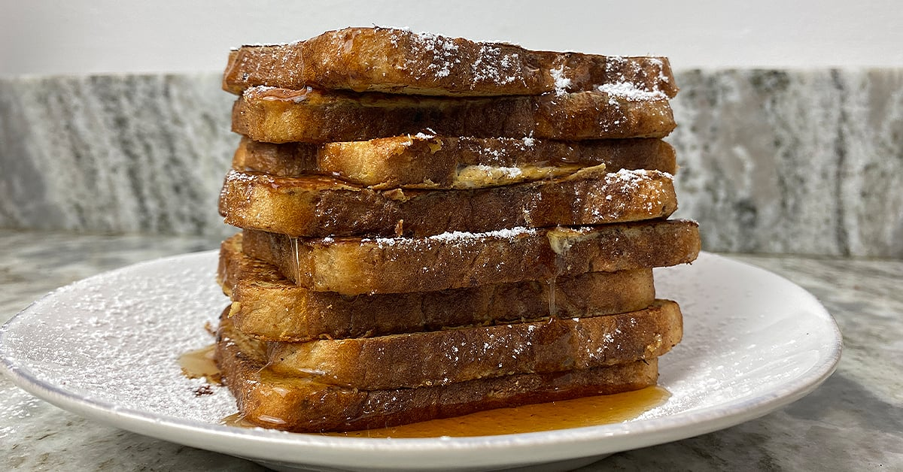

Anabolic French Toast

Perfect for Bodybuilders!
This dish is absolutely delicious! I love to make it after a long and hard workout.
The protein in this anabolic French toast recipe comes from a combination of egg beaters (or egg whites) as well as a small amount of Greek yogurt. I know that adding Greek yogurt to the egg mixture sounds odd, but I promise you cannot taste it! It gives us a nice little protein boost here with no added flavor at all.
Ingredients
- 4 Slices of Bread
- Egg Whites
- Cinnamon
- Artificial Sweetener of your choice
- (optional) Greek Yogurt
Steps
- Pour 300g of egg whites into a bowl
- Mix in a dash of cinnamon,artificial sweetener, and greek yogurt if you choose
- Give the bread an egg bath and place on a skillet on medium heat
- Cook for 1-2 minutes and flip
- Cook for another 1-2 minutes
- Cover in topppings of your choice and enjoy!
Return Home
Return to top